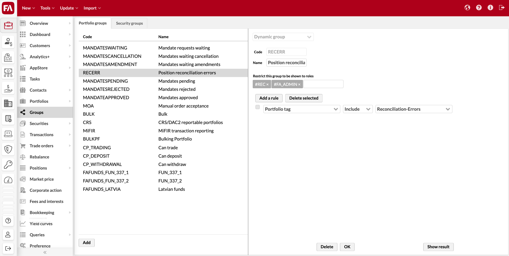

Groups view
You can manage groups in the system in the Groups view. You can group portfolios or securities to manage them as a whole and use them for, for example, searching data, reporting, and running corporate actions. For example, you can group portfolios based on whether their owners are private or corporate customers, or based on their advisors, and you can create a group for securities that you want to allow your customers to trade.
You can maintain two kinds of groups:
Static group - the portfolios or securities within a group are maintained by adding and removing portfolios or securities manually.
Dynamic group - the portfolios or securities within a dynamic group are maintained automatically by the system to always include all portfolios or securities that fulfill the dynamic criteria defined for the group.
In addition to maintaining groups in the Groups view, you can add groups to single portfolios or securities in the Portfolio window (Portfolio groups or Security groups tab) or the Security window (Security groups tab). See Portfolio groups and Security groups).
You can group static or dynamic groups by using a prefix or suffix in the group code with an underscore that separates the grouping code from the rest of the group code. For example, fund groups have the prefix "FAFUNDS_" in their group code.
Create a static group
To create a static group, click Add, select Static group from the drop-down menu at the top, and define the group information in the two tabs.
|  |
Basic info
Define the basic information for the group in the Basic info tab. A red star indicates a mandatory field.
Code* – a code to identify the group and distinguish it from others.
To create a static fund group, add the prefix "FAFUNDS_" to the group code. You can also create static fund groups in FA Fund Management (see Create fund groups in FA Fund Management reference).
Name* – the name of the group.
Description – an optional detailed description of the group.
Restrict this group to be shown to roles - an option to restrict access to the group based on user role. You can restrict the list of available groups within the Group, contact, portfolio dropdown per user role:
User roles assigned in the FA Admin Console app (for details, see User details pane).
Underlying system-level roles marked with # before the role name.
Portfolios
Select the portfolios to include in the static group in the Portfolios tab. You can include portfolios in the group by moving them from "Available" to "Chosen". To remove portfolios, move them from the right list to the left. You can also search for portfolios in both lists using portfolio name or ID.
Securities
Select the securities to include in the static group in the Securities tab. You can include securities in the group by moving them from "Available" to "Chosen". To remove securities, move them from the right list to the left. You can also search for securities in both lists using security name, ISIN, code, or currency.
Create a dynamic group
The system automatically maintains dynamic groups so that they only contain portfolios or securities matching the criteria defined for the group.
To create a dynamic group, click Add, select Dynamic group from the drop-down menu at the top, and define the group information. A red star indicates a mandatory field.
Code* - a code to identify the group and distinguish it from others.
To create a dynamic fund group, add the prefix "FAFUNDS_" to the group code. You can learn more about fund groups in Create fund groups in FA Fund Management reference.
Name* - the name of the group.
Restrict this group to be shown to roles - an option to restrict access to the group based on user role. You can restrict the list of available groups within the Group, contact, portfolio dropdown per user role:
User roles assigned in the FA Admin Console app (for details, see User details pane).
Underlying system-level roles marked with # before the role name.
Below the basic information, define the dynamic criteria for the group by adding criteria with the Add rule button. The available criteria are related to portfolio or security information and the primary contact's information.
Criterion - choose the criterion you want to base your rule on from the first drop-down menu.
Portfolio information: status, type, currency, language, asset manager, account, juridical, tax county, valuation method, posting rule, close type, cost type, cost formula, book-entry account number, custody, model portfolio, portfolio groups, portfolio tag, account tag, and pre-trade, post-trade and investment plan limit status.
Security information: status, type, subtype, currency, country, marketplace, settlement place, holiday calendar, issuer, class 1-5, security tag, and security profile attribute.
Primary contact's information: status, type, country, juridical, identity, classification, classification 2, classification 3, nationality, language, representative and contact tag.
Profile attribute: in addition to the fixed portfolio, security, and contact information, you can form a dynamic group based on the information saved in custom fields defined for your portfolio, security, or contact.
Include / Exclude - define if portfolios or securities are included or excluded from the group based on this criterion.
Value - define the value you want to base your criterion to include or exclude portfolios or securities from the group.
For a criterion based on profile attributes, define a key and value pair in the two fields available. The key in the first field defines which custom field value you want to use, and the value in the second field defines which value of the custom field you want to use as the criterion.
Example of a dynamic group with "and" and "or" criteria:
Currency - Include - EUR
Tax country - Include - Finland
Tax country - Include - Estonia
→ This dynamic group includes portfolios with "Currency" "EUR" AND with "Tax country" "Finland" OR "Tax country" "Estonia".
Example of a dynamic group with profile attributes: Contact profile attribute - Include - contact.profiling.risk - Medium
→ This dynamic group relies on custom fields for contacts. This example assumes you have a custom field for "Risk" (defined with the key contact.profiling.risk) with options "Low", "Medium" and "High". The dynamic group includes portfolios of contacts with "Risk" level "Medium".
Note
If you do not define any criteria for a dynamic group, the group includes all portfolios or securities saved in the system.
After defining the dynamic group criteria, you can click Show result to see which portfolios or securities are included in the group with the defined criteria.
Groups with limited visibility
You can also restrict the usage of groups for users with limited visibility - users with limited visibility can only use groups within the Group, contact, portfolio dropdown if a separate permissions GROUPS.VIEW is enabled. When disabled, users with limited visibility can see all the groups within Group, contact, portfolio dropdown - the contents of the group are always filtered according to limited visibility, ensuring the user can only see portfolios they are allowed to access (thus, some groups might show as empty for a user with limited visibility if the group contains no portfolios the user is allowed to access.
Users without limited visibility can always use groups Group, contact, portfolio dropdown if groups have been defined in the system.